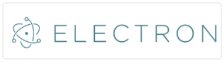
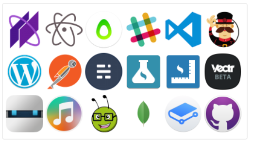

Softwares Desktop

Com o Node.JS também é possível criar aplicações Desktop. Estas aplicações normalmente utilizam o Chromium, navegador de código aberto que está por trás do Google Chrome, e o Node.js.
As telas são feitas com HTML5 e CSS3, e o JavaScript pode se comunicar diretamente com o Node.js, que fica embutido na aplicação.
Atualmente o framework mais utilizado é o Electron, criado pela equipe do GitHub. Com ele já foram desenvolvidos famosos softwares como o Atom, Slack e Visual Studio Code.
